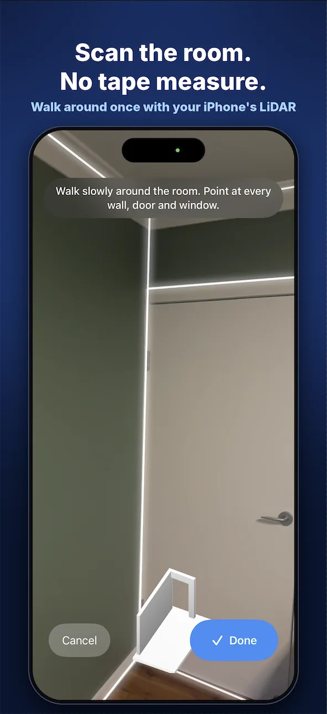
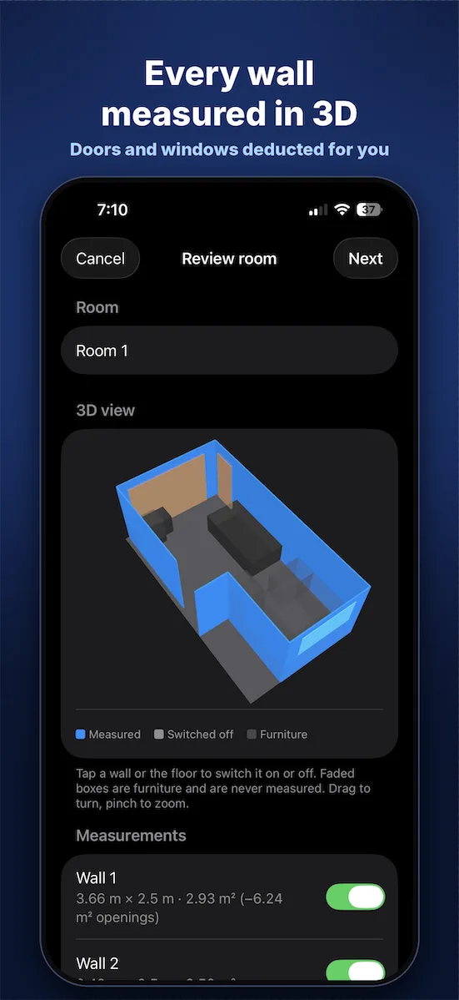
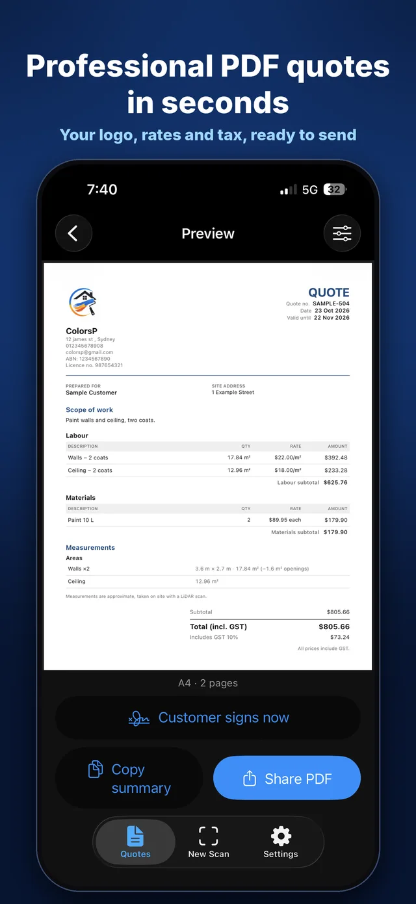
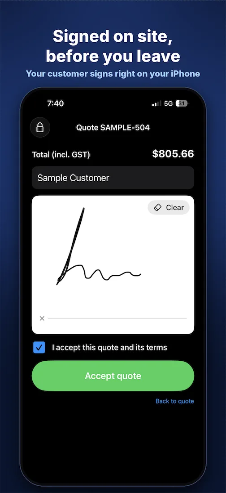
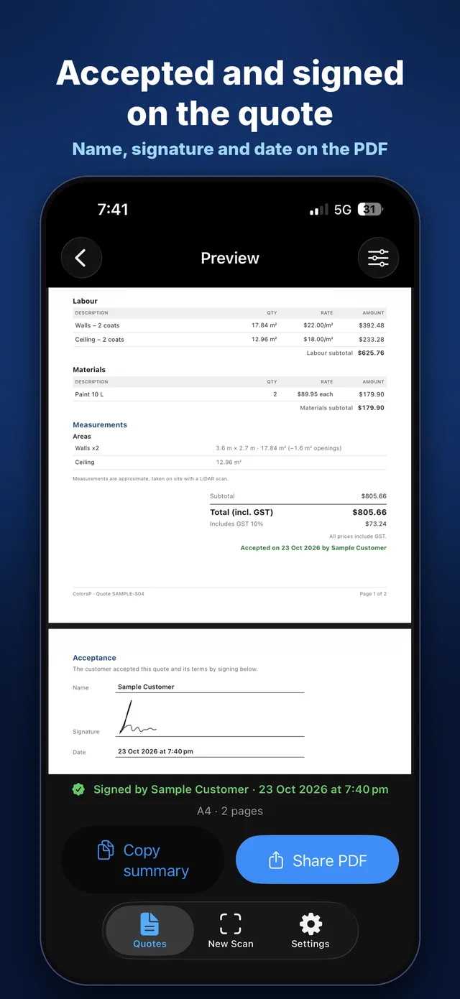
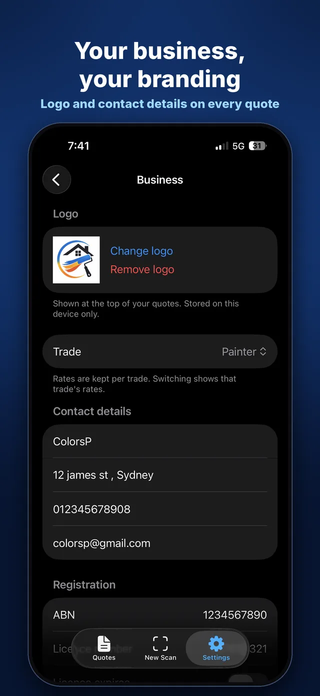

Scan the room.
Send the quote.
Get it signed.
Walk around once with your iPhone. QuoteWalk measures every wall, floor and ceiling, takes off doors and windows, and prices it with your own rates. You get a professional PDF quote in about a minute.
7-day free trial · Needs an iPhone with LiDAR (Pro models, iPhone 12 Pro or newer)
From walk-through to signed quote
Built for painters, flooring installers and tilers who are sick of tape measures and late-night quoting.
Scan
Point your iPhone at each wall, door and window as you walk the room. LiDAR builds a 3D model as you go.
Review
Tap any wall or the floor to switch it on or off. Furniture is ignored, and openings are taken off for you.
Quote & sign
Your rates price the job. Add materials, then share the PDF, or hand the phone over for the customer to sign right there.






Everything on the quote, nothing to retype
- Walls, ceilings and floors in m² or sq ft
- Doors and windows deducted automatically
- Separate rates for each trade: painter, flooring, tiler
- Labour and materials lines, your tax (GST, VAT or sales tax)
- Your logo, ABN or licence number and contact details
- Customer signature, name and date on the PDF
- Share by email, Messages or WhatsApp, or copy a text summary
- Quotes and customers stored on your iPhone only
Measurements from a LiDAR scan are close but not perfect. Always check critical dimensions before ordering materials.
QuoteWalk Pro
Start with a 7-day free trial. Prices in your currency are shown in the App Store. Cancel any time in your Apple ID settings.
If it saves you one evening of quoting, it has paid for itself.
Questions
Which iPhones work?
QuoteWalk needs the LiDAR scanner found on iPhone Pro models (iPhone 12 Pro and newer Pro and Pro Max).
How accurate are the measurements?
LiDAR is accurate enough for quoting in most rooms, but it isn't a laser measure. Every quote shows that measurements are approximate. Check anything critical before you order materials.
Can I use my own prices?
Yes. Set your own rate per m² or sq ft for each category (walls, ceilings, floors and so on) in Settings, and every scan is priced from those rates. Add materials as extra lines.
Does it work in Australia and the US?
Yes. QuoteWalk supports metric and imperial, and lets you set GST or sales tax and your own currency.
Where is my data stored?
On your iPhone. QuoteWalk doesn't need an account and doesn't upload your customers or quotes to a server.
Does it do invoices?
QuoteWalk is for quoting. When the job's done, Invomile handles the invoice, receipts and mileage.